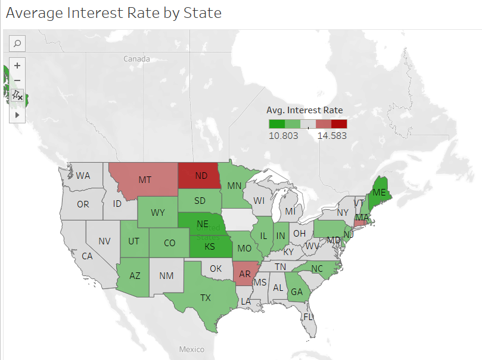

Apparently, more than 50% of the loans were taken for debt consolidation
1- Describe the data and its issues:
The data consists of 10,0000 rows and 55 columns of information about people applied for loans. It has information about the applicant (employment length, annual income, employment title,...etc) and other information about the loan like (term, purpose of the loan, interest rate...etc)
Data Issues: To determine the missing data, I prepared a heat map that shows the missing data in our database, see the figure below:
We can see from the figure that there are some attributes have too many missing values like (debt_to_income_joint, annual_income_joint, months_since_90d_late...etc), and other attributes like (emp_length) has a small percentage of missng data. For those attributes who have too many missing data, they will be eliminated from this analysis, and those have few missing data will be handled using data handling techniques
2- Data Visualization:
The figure below shows the distribution of the interest rate, the figure shows that the values of the interest distributed between 5% and around 32%. Obviously, the values are more concentrated between 5% and 20%.

The figure below shows that for the loans below 10K the terms of the loan can only be 36 months. Also, the figure shows that lower interest rates have high correlation with lower terms duration, (clearly, most of the points for interest less than 10% the terms are 36 months).

To understand the distribution of the data, it seems like a good idea to see why those loans were taken. The figure below shows the count of the loan purposes.
Apparently, more than 50% of the loans were taken for debt consolidation
The annual income distribution below shows that more than 90% of the annual income values are less than 250k, which means that the models we develope will be more representative for small annual income values

Note : The Next figure was developed using Tableau not python
The Figure below shows a map of the distribution of the interest rate by state
3- Modeling:
To find a model that works for predicting the interest rate, we should think of a regression model. The linear regression could be an option but I doubt it (Too many dimensions) and this increases the complixety.
In this analysis, I used 3 different models (Linear Regression, Random Forest Regression, and The Support Vector Machine Regressor). I evaluated the three of the them using three different metrics (Mean Absolute Error, Mean Squared Error, Root Mean Squared Error), The Random Forest Regressor showed the Best performance on this data, then the support vector machine regressor and as expected the Linear Regression showed the poorest performance.
The data needed to be cleaned and prepared before using it in the machine learning algorithms.
In this analysis:
1- Only Numerical Columns were used.
2- Columns with too many missing values were eleminated
3- The Employment length column missing values were filled by using random number between 0 and 10
4- In the (months in the last 12m inquiry columns) there wer some missing values, instead of droppping the columns, I eliminated the rows that contain missing values.
5 - I ended up with 36 columns and 8709 rows.
The figure below shows a plot of the predicted values of the random forest regressor vs the actual values. The more tight the values the better the performance.

The values of the evaluation metrics are:
1- Mean Absolute error : 0.746
2- Mean Squared error : 2.194
3- Root Mean Square Error: 1.48
The figure below shows a plot of the predicted values of the Support Vector Machine regressor vs the actual values. The more tight the values the better the performance.

The values of the evaluation metrics are:
1- Mean Absolute error : 1.319
2- Mean Squared error : 4.08
3- Root Mean Square Error: 2.02
IF I had more time I would have spent more time exploring the data and cleaning it, also I would have included the non-numeric variables after tokenising them and scaling all variables.